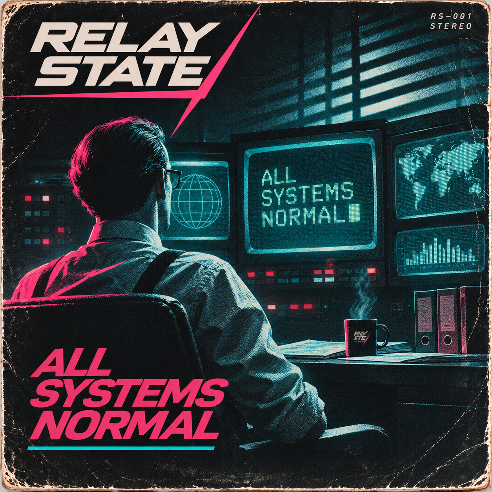

About Relay State
Relay State is a dark electronic music project exploring the fragile boundary between human emotion and machine logic. Blending atmospheric synthpop, industrial textures and haunting melodies, Relay State creates a world of automated systems, forgotten memories, silent control rooms and transmissions that never quite end. Beneath the mechanical precision lies something deeply human: stories of control, uncertainty, responsibility and regret, brought to life through hypnotic rhythms, analog synthesizers and a distinctive baritone voice.

All Systems Normal
The debut single from Relay State. The first public transmission from Relay State: dark melodic electronics, mechanical precision and a quiet unease beneath the surface.
Contact
Press, playlists, licensing and other Relay State enquiries.